5.4.1. Методы факторизации
5.4.1. Методы факторизации
Задача факторизации, т. е. задача разложения большого числа на простые множители, является одной из наиболее востребованных в криптографии. Это связано с тем, что на сложности решения данной задачи основана криптостойкость ряда практических асимметричных криптосистем, таких как алгоритмы RSA и Рабина, а также алгоритмы ЭЦП и криптографические протоколы с их использованием. Наибольший интерес представляет задача разложения числа состоящего всего из двух больших простых множителей, т. е. чисел вида  . Перед разложением числа на множители полезно убедиться, что оно не является простым. Сделать это можно с помощью одного из тестов на простоту (например, вероятностного теста Рабина − Миллера).
. Перед разложением числа на множители полезно убедиться, что оно не является простым. Сделать это можно с помощью одного из тестов на простоту (например, вероятностного теста Рабина − Миллера).
Методы факторизации могут быть классифицированы в соответствии с классом сложности алгоритма разложения на множители (рис. 5.12).
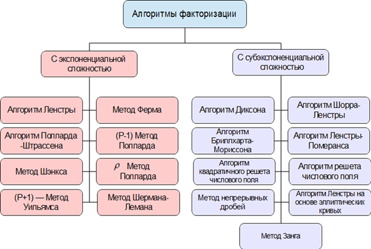 |
Рис. 5.12. Классификация алгоритмов факторизации |
Наиболее простым и в то же время малоэффективным для чисел большого размера является метод пробных делений. Он состоит в последовательном переборе всех простых чисел не превышающих 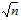. Так как один из множителей числа n обязательно меньше , то этот алгоритм гарантированно выполняет разложение числа на множители. Вместе с тем очевидно, что он неэффективен для чисел больших размерностей из-за большого объема вычислений. Далее рассмотрим несколько алгоритмов более пригодных к использованию на практике. В рамках данной работы рассмотрим два популярных алгоритма факторизации − алгоритм Ферма и алгоритм Полларда. Они относятся к алгоритмам с экспоненциальной сложностью работы, но довольно просты в практической реализации. Все алгоритмы факторизации можно разделить на два класса по признаку вычислительной сложности их использования, это алгоритмы с экспоненциальной сложностью и субэкспоненциальной сложностью.
Алгоритм Ферма
Получил свое название от имени великого математика Пьера Ферма, широко применявшего его для задачи разложения чисел на простые множители. Он основан на том, что каждое нечетное число N может быть представлено в виде разности квадратов двух целых чисел x, y:
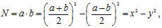
где a, b сомножители числа N.
Если N – простое число, то 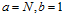, поэтому существует единственное разложение 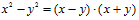 , которое не дает других сомножителей кроме N, 1. Если число N составное, то найдется разложение 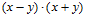, которое дает хотя бы одну пару сомножителей отличных от N, 1. Исходя из этого свойства был сформулирован алгоритм поиска делителей числа N. Если найти пару чисел x, y, такие, что 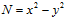, то легко получить делитель числа N как 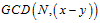 или  (GCD – great common divisor, наибольший общий делитель).
(GCD – great common divisor, наибольший общий делитель).
Алгоритм состоит из следующих шагов:
− вычислить 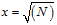 − целую часть квадратного корня из N;
− для целых k=1,2,... вычисляем 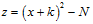 и проверяем, является ли z полным квадратом, если является, то завершить алгоритм и выполнить поиск делителей;
− если был найден полный квадрат, то поиск делителей выполнить следующим образом: сначала определить 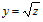, 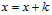, затем вычислить делители как  или 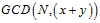.
или 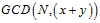.
− делители числа N, найденные с помощью алгоритма Ферма, не обязательно являются простыми и требуют дальнейшей факторизации [6].
Данный алгоритм факторизации наиболее хорошо работает в том случае, когда число N состоит из двух больших простых множителей примерно одинакового размера. По сути, это переборный алгоритм, но выполняющий поиск больших делителей числа, а не маленьких, как метод пробного деления. Важным свойством его является то, что он гарантированно находит разложение, но при этом может работать очень долго. Наименее подходит данный алгоритм для факторизации чисел, содержащих малые сомножители, поэтому целесообразно перед его использованием применять другие алгоритмы факторизации, как минимум, это метод пробного деления на некоторое множество небольших простых чисел.
Существует вариант алгоритма факторизации Ферма предложенный Дональдом Кнутом, несколько отличающийся от приведенного выше алгоритма.
Он состоит из следующих шагов:
1) 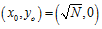.
2) Вычислить 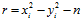.
3) Если r=0, то завершить алгоритм и вычислить делители с использованием чисел x и y, если r > 0, то 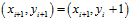, если r < 0, то 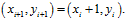
4) Перейти к шагу 2.
Кроме этого, существует несколько методов повышения эффективности алгоритма Ферма для случая, когда величина сомножителей факторизуемого числа сильно отличается.
Алгоритм Полларда P-1
Перед рассмотрением алгоритма Полларда P-1 необходимо изучить некоторые вспомогательные теоретические сведения, а именно понятие гладких чисел. Гладкие числа используются многими алгоритмами факторизации, в том числе и рассматриваемым алгоритмом Полларда P-1. Упрощенно, гладкими называются числа, легко раскладываемые на множители с помощью пробного деления. Пусть B − целое число. Число N называется В-гладким, если любой его простой делитель меньше чем B. Например, число 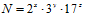 является 18-гладким, так как каждый из его сомножителей меньше 18. Если граница гладкости B мала по сравнению с самим числом, то его называют просто гладким.
Число называют N показательно B-гладким, если любая степень простого числа, делящая N, меньше B. Например, число является показательно B-гладким, если 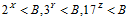.
Алгоритм факторизации Полларда P-1 предполагает, что число, которое требуется факторизовать, равно произведению двух простых чисел  и при этом число P-1 является показательно B-гладким, а Q-1 таковым не является. Тогда можно надеяться, что число P-1 делит B! тогда как Q-1, скорее всего, этого числа не делит.
и при этом число P-1 является показательно B-гладким, а Q-1 таковым не является. Тогда можно надеяться, что число P-1 делит B! тогда как Q-1, скорее всего, этого числа не делит.
Предположим, что мы нашли, что 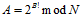, тогда 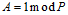 по малой теореме Ферма, так как P-1 делитель B! И 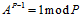 , с другой стороны, равенство 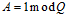 скорее всего не выполняется.
Таким образом, P является делителем числа A-1, а Q не является, т. е. P можно найти вычисляя наибольший общий делитель GCD(A-1,N). На псевдокоде этот алгоритм выглядит так:
A=2; for(j=2;j<=B;j++) { A=A^j mod N; } p=GCD(A-1,N); // GCD – наибольший общий делитель if(p!=1 && p!=N) return p; else out(“Not found”); |
Метод ρ-Полларда
Этот метод был разработан Джоном Поллардом в 1975 году, он основан на парадоксе дней рождения. Пусть 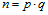 известное целое число, являющееся произведением двух неизвестных простых чисел p и q, которые требуется найти. Это выполняется следующим образом:
1) выбираем небольшое число 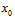 и строим последовательность чисел  таких, что следующее число вычисляется на основе предыдущего 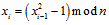;
таких, что следующее число вычисляется на основе предыдущего 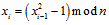;
2) для каждого 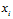 находим НОД числа n и всех возможных разностей, где 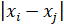i > j;
3) если 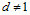, то d − это делитель n.
В результате выполнения данного алгоритма могут получиться не простые делители требующие дальнейшей факторизации. Вместо рекуррентной функции 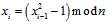 можно выбрать и другой многочлен 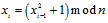 или 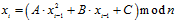.